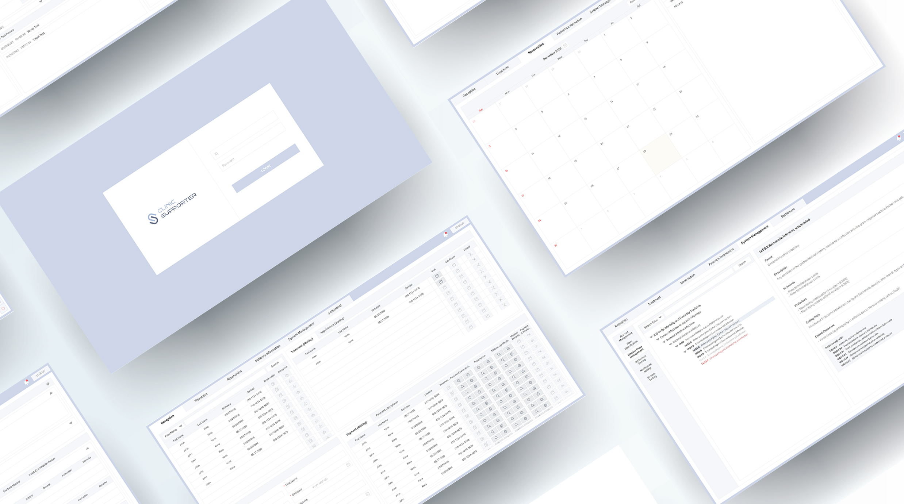
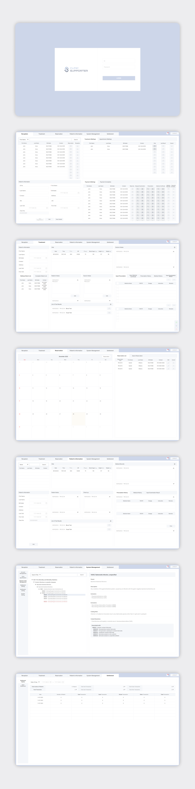

Overview
웹 브라우저 기반의 필리핀 소규모 의원 및 병원 대상 통합 관리 시스템(HIS) 구축 프로젝트입니다.접수, 진료, 예약, 정산 등의 병원 행정 업무들을 통합적으로 관리할 수 있는 시스템을 목표로 진행되었습니다.

🎨 UX/UI Design
-
의료진의 시각 피로도를 고려한 저채도 컬러 가이드
화면을 장시간 주시해야 하는 의료진의 눈 건강을 배려하여, 전체적인 테마의 채도를 낮추고 눈이 편안한 톤앤매너 설정 -
페이지 이동 최소화를 통한 워크플로우 최적화
진료 프로세스별로 필요한 핵심 정보를 한 화면에 직관적으로 배치하여, 잦은 페이지 이동으로 인한 업무 피로도 및 인지 부하 감소 -
Figma 기반 화면 설계 및 프로토타이핑
💻 Publishing
-
개발 협업을 고려한 컴포넌트(Component) 단위 마크업
후속 단계인 Vue.js 개발 환경을 선제적으로 고려하여, 마크업 구조를 컴포넌트 단위로 쉽게 쪼갤 수 있도록 구조적 설계 진행 -
CSS 모듈화 및 재사용성 강화
반복되는 병원 관리 UI 패턴과 레이아웃 구조를 분석하여 CSS 클래스를 구조화하고 공통화 -
라이브러리 커스터마이징
병원 업무에 필수적인 Fullcalendar.js 및 DatePicker 라이브러리를 시스템 UI에 맞춰 정밀 커스텀 스타일링
